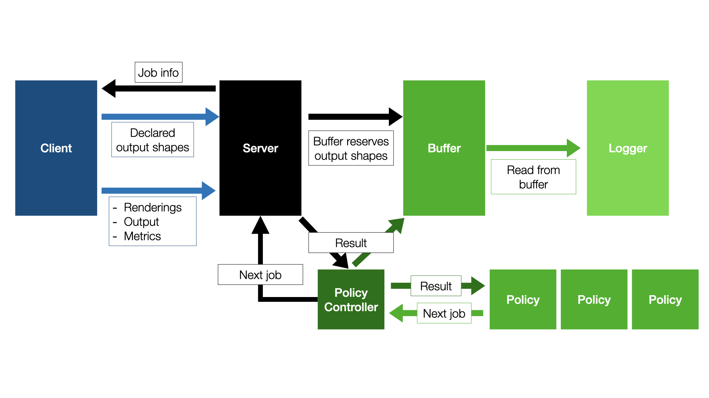
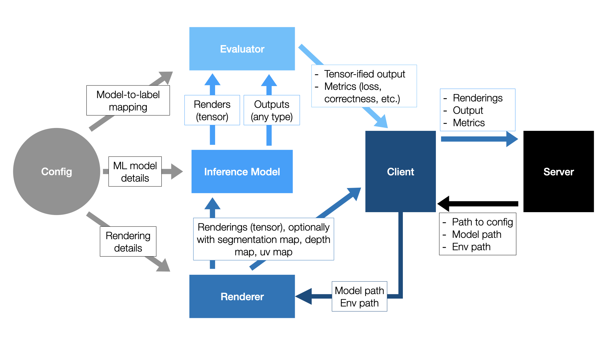

Customizing 3DB¶
We will now outline the different ways in which 3DB can be modified and customized to capture a large set of use cases.
The 3DB Workflow¶
3DB is designed to be extended without needing any modifications to the source codebase itself (and thus, it is fully extendable even when installed as a module). In particular, one can extend 3DB by replacing one or more of the modules with custom subclasses. The Customization Guides linked below illustrate how to do this, but first we will briefly describe the structure of 3DB and the role that each module plays.
3DB is structured as a client-server application: the server loads the configuration file, and uses it to load the 3D models, the environments, and the search space. From then on, the responsibility of the server is to send jobs to the client(s), receive the corresponding results, save them in a buffer, and then (concurrently on a separate process) log results from the buffer onto disk. That is, the server side of the 3DB pipeline is modularized as follows:
While the server side of 3DB is modularizable, users should seldom have to customize anything other than the loggers (shown here). The other components, e.g., the scheduler, the search strategy, the policy controller, and the buffer are already rather general and should capture the vast majority of use cases.
The client side of 3DB is where most of the customization happens. A diagram of the client-side workflow is shown below:
Breaking this down piece by piece:
Step 1: Scheduler prioritizes a job, server sends to client¶
The client receives a job from the server. The job metadata consists of a path to a 3D model and environment to load.
Step 2: Client renders and applies controls¶
The job metadata is passed to the rendering module, along with the rendering parameters from the config file. The default renderer is Blender, but as shown here, users can implement their own rendering module, as long as it provides concrete implementations of a few simple abstract functions. The renderer outputs a list of renderings—both a standard RGB render as well as any others that were requested inside the config file (see here), such as a UV map or segmentation map.
As part of step 2, the renderer applies a set of controls, or structured scene
transformations, described here. Users can also implement their own controls, as shown
here.
Step 3: Client predicts and evaluates¶
The image (RGB) output of the renderer is sent to the inference module, which then outputs a prediction.
This prediction, along with any auxiliary information generated by the renderer (e.g., UV maps, segmentation maps, or depth maps), as well as a unique identifier for the 3D model, is then passed to an evaluation module.
The evaluator is responsible for two tasks:
converting the output of the inference model to a tensor.
computing the desired performance metrics for the inference model (e.g., correctness, loss, etc.).
3DB provides evaluators for both classification and object detection; for other modalities or tasks, users will have to customize the evaluation model as illustrated here.
Step 4: Results sent back to server¶
The output of the evaluator is sent back to the client. The client packages up the outputs of the evaluator and the renderer and sends them back to the server, where they are logged based on what loggers the user specifies.
Customization¶
As mentioned in the section on setting up a configuration file, any of the previously mentioned modules can be substituted for a user-defined module, as long as the correct functions are implemented. In the guides below, we’ll walk you through how to add custom controls, inference modules, evaluators, loggers, and renderers: